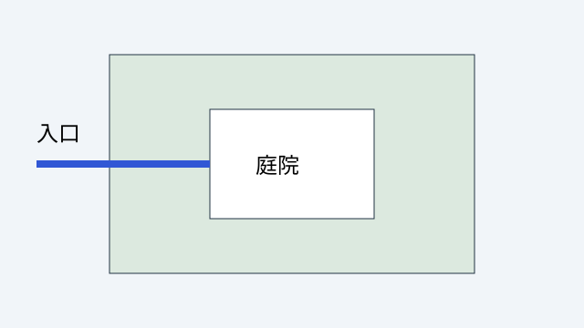

学习成果
基于图像位置与明确标准提出改进并解释理由
动线与庭院
这是原创示意图。蓝线连接入口与庭院。评价标准是路径可辨识、可达性与空间停留，图形本身不代表已通过建筑规范审查。

对照：说明观察位置、采用的评价标准与修改理由；开放回答由 agent 评估。
合卷检索
暂时遮住图片，描述入口到庭院的路线，并用一个明确标准解释你的修改方案。
基于图像位置与明确标准提出改进并解释理由
这是原创示意图。蓝线连接入口与庭院。评价标准是路径可辨识、可达性与空间停留，图形本身不代表已通过建筑规范审查。

对照：说明观察位置、采用的评价标准与修改理由；开放回答由 agent 评估。
暂时遮住图片，描述入口到庭院的路线，并用一个明确标准解释你的修改方案。